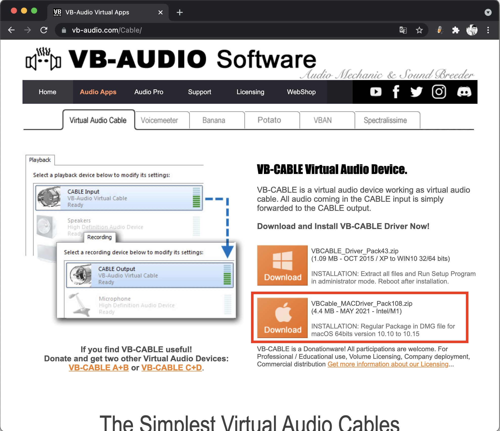
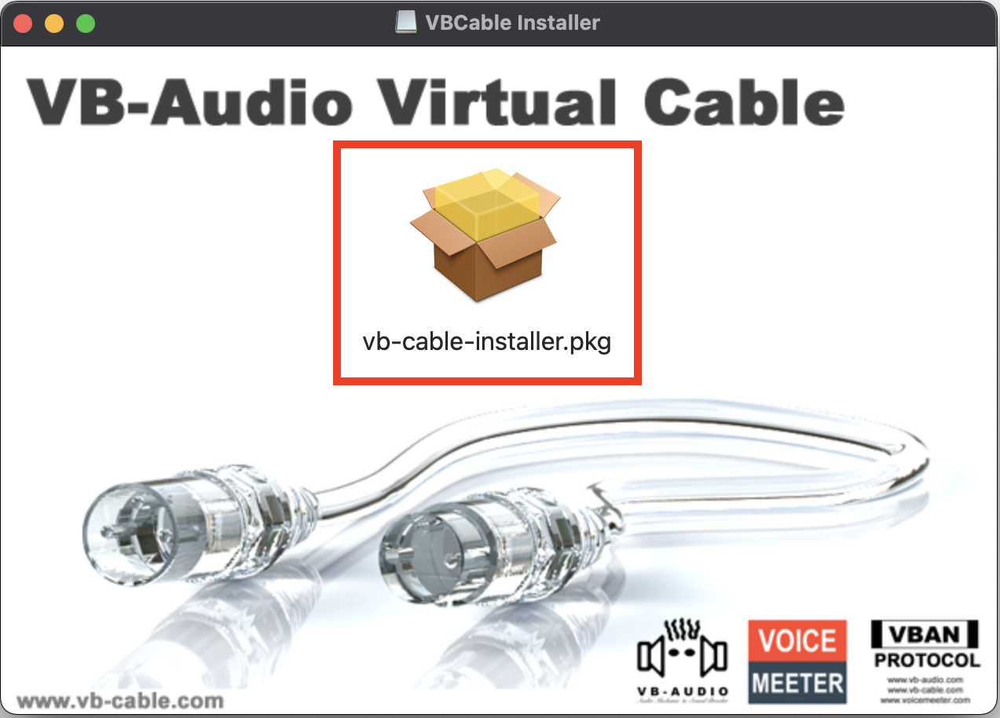
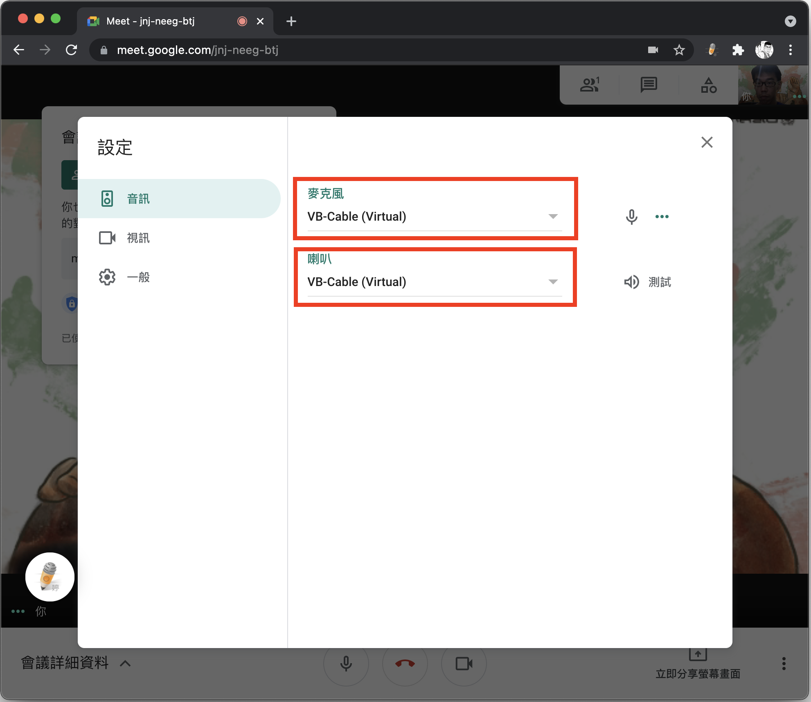

2021語音辨識文字說明
情境及困難點說明
2021年5月19日中央流行疫情指揮中心宣布全國升至第三級疫情警戒，線下實體運動課程都暫緩了，健身房也不能去了。
於是一些教練改用線上視訊的方式來開課，常用的視訊軟體有Google Meet和ZOOM。
對我們聽障朋友來說，線上課程最大的不方便如下：
- 教練安排日期時間，用線上視訊軟體進行課程，不是透過預錄課程後製上字幕的方式進行，所以會有無法吸收內容的情況。
- 實體課上課時，可以觀察旁邊同學動作來調整，但線上課程是自己1個人，因為課程內容常有方向的變化，沒辦法一直看著螢幕，偶有會跟不上節奏的情況。
經驗分享
雅婷逐字稿
之前是以App的方式推出，它現在已經有Google Chrome Plugin，安裝在Chrome後，就可以利用它來提供語音辨識文字的服務。
安裝及說明網址：雅婷逐字稿(另開網站)
Google Meet
Google Meet登入後，會在畫面左下角看到雅婷逐字稿的圖示，直接點選開啟就可以馬上使用，相當方便。
ZOOM、FB視訊、Youtube等網路直播或影片
我用PC桌機、NB筆電(作業系統為WIN)、macbook筆電這3個裝置來說明，但我先說明一下原理：
原理說明
音源輸出(Audio Output)：就是喇叭，放出影片的聲音。
音源輸入(Audio Input)：就是麥克風，把聲音收進來。
所以我們要做的事情，就是把ZOOM、FB視訊、Youtube等網路直播或影片放出來的聲音，從喇叭輸出轉到麥克風輸入，給雅婷逐字稿跑語音辨識文字。
這個概念就叫做迴路(LoopBack)。
一、PC桌機
這部分最好做，直接用音源線做硬體的LoopBack。
- 找1條3.5mm音源線(公對公)分別插在麥克風孔跟喇叭孔就完工了!!
- 用Chrome開啟影片網址，再從Chrome工具列叫出雅婷逐字稿，新增一個逐字稿
- 影片播放時，就會把聲音透過喇叭孔傳到麥克風孔，雅婷逐字稿收到聲音時就會開始工作了
二、NB筆電(作業系統為WIN)
我們要先安裝一個虛擬音源線VB-CABLE Driver，它是一款免費的虛擬音源線裝置，安裝完成以後，在「聲音」的「播放」選項會新增一個虛擬裝置「CABLE Input」，「錄音」的選項會新增一個虛擬裝置「CABLE Output」，這樣子就可以做一個LoopBack。
- 去官方網址下載VB-CABLE Driver的Win版本。
VB-CABLE Driver官方網站 - 下載檔案是ZIP壓縮檔，可以用WIN10內建的解壓縮功能，解壓縮後會看到一個名為「VBCABLE_Driver_Pack43」的目錄。
解壓縮目錄 - 如果你WIN版本是64位元，安裝「VBCABLE_Setup_x64」這個檔案；反之安裝「VBCABLE_Setup」這個檔案，按滑鼠右鍵，選擇「以系統管理員身分執行」。
按滑鼠右鍵，選擇「以系統管理員身分執行」 - 依照畫面指示安裝，到最後會請你重開機來完成安裝程序。
- 重開機後，在工作列上面的聲音圖示按滑鼠右鍵，點選「音效」。
按滑鼠右鍵，選擇「以系統管理員身分執行」 - 選擇「錄製」的索引標籤，選擇「CABLE Output」，點選「設為預設值」，再按「確定」。

選擇「錄製」的索引標籤，選擇「CABLE Output」，點選「設為預設值」，再按「確定」。 - 選擇「播放」的索引標籤，選擇「CABLE Input」，點選「設為預設值」，再按「確定」。
選擇「播放」的索引標籤，選擇「CABLE Input」，點選「設為預設值」，再按「確定」。 - 這時候，喇叭放出來的聲音會是CABLE Input，麥克風收到的聲音會是CABLE Output，就變成一個LoopBack了。
- 用Chrome開啟影片網址，再從Chrome工具列叫出雅婷逐字稿，新增一個逐字稿時，此時會跳出這個畫面，任選一個都可以Work。
從Chrome工具列叫出雅婷逐字稿，新增一個逐字稿時，會跳出這個畫面，任選一個都可以Work。
三、macbook筆電
步驟跟NB筆電(作業系統為WIN)相同，都要先安裝一個虛擬音源線VB-CABLE Driver。
- 去官方網址下載VB-CABLE Driver的Mac版本。
 VB-CABLE Driver官方網站 - 下載檔案是ZIP壓縮檔，解壓縮後會看到一個名為「VBCABLE_MACDriver_Pack108」的目錄，點選「VBCable_MACDriver_Pack108.dmg」這個檔案兩下安裝。
解壓縮目錄 - 點選「vb-cable-installer.pkg」檔案兩下安裝，依照畫面指示安裝，完成安裝程序。
 點選「vb-cable-installer.pkg」檔案兩下安裝，依照畫面指示安裝，完成安裝程序。 - 打開ZOOM App，點選左上角的「zoom.us」，再點選「偏好」來設定喇叭與麥克風。
打開ZOOM App，點選左上角的「zoom.us」，再點選「偏好」來設定喇叭與麥克風。 - 在「喇叭」跟「麥克風」都點選「VB-Cable」。
在「喇叭」跟「麥克風」都點選「VB-Cable」 - 在Google Meet的設定，也是把麥克風跟喇叭都設定為「VB-Cable(Virtual)」。
 在Google Meet的設定，也是把麥克風跟喇叭都設定為「VB-Cable(Virtual) - 這時候，喇叭放出來的聲音會是VB-Cable(Virtual)，麥克風收到的聲音會是VB-Cable(Virtual)，就變成一個LoopBack了。
- 用Chrome開啟影片網址，再從Chrome工具列叫出雅婷逐字稿，新增一個逐字稿時，會跳出這個畫面，點選VB-Cable(Virtual)後就可以Work。
從Chrome工具列叫出雅婷逐字稿，新增一個逐字稿時，會跳出這個畫面，點選VB-Cable(Virtual)後就可以Work。